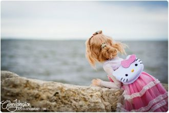

Сердца стук, тело горит огнём,Ты вошел и поселился в нём,Стал другим весь мир вокруг меня,В нем теплей день ото дня.
Позабудь об этом дне,Спор не нужен никому.Не читай нотаций мне,Мама, это ни к чему.
Ах, я уже не верила, не надеялась,Не гадала на любовь.Но что-то ветром с берегаМне навеяло, и моя взыграла кровь.
Слайд в темное и ничего,Я все отдам за него, открою.Так пусто мне, как никогда,С неба по окнам водаНакроет.
Turn up the musicLet's get out on the floorI like to move itCome and give me some moreWatch me gettin' physicalAnd out of control
Late at night in summer heat Expensive car and empty street There's a wire in my jacket For this is my trade It only takes a moment
Под солнцем таяли дни мои с тобою.Я видела тучи, но они прошли стороною.Куда убегают стрелки на часах,Когда я смотрю в твои глаза?
I'm in my 14 carats, I'm 14 carat Doing it up like Midas, mmm Now you say I got a touch, so good, so good Make you never wanna leave,
Ooh, all the rhythm takes you overTakes you to a different placeA different spaceOoh, the smoke is getting closer
I can't go any further then this I want you so badly, it's my biggest wish
Oh, I cannot explain Every time it's the same Oh, I feel that it's real Take my heart I've been lonely too long
Every night in my dreams I see you, I feel you That is how I know you go on.
(After love after love...)
Где-то мечтой просыпаюсь,С неба на камни срываюсь,Руки твои отпуская,Падаю, но поднимаюсь.Нежно целуя дыханье,Я промолчу до свиданья.
Oh baby, baby.... Oh baby, baby...
Felicità è tenersi per mano andare lontano la felicità E' il tuo sguardo innocente in mezzo alla gente la felicità
Da bambino io sognaidivi eroi e marinainella mente avevo giàla mia idea di libertà.La bambina che era in meora è donna insieme a te
Load up on guns and bring your friends It's fun to lose and to pretend She's over-bored and self-assured Oh no, I know a dirty word
No time for standing out there,this night is something to care,we tried to find out some where to goIt's all we needit's all we need
What is love?Baby don't hurt meDon't hurt meNo more
Baby don't hurt me, don't hurt meNo moreWhat is love?Yeah